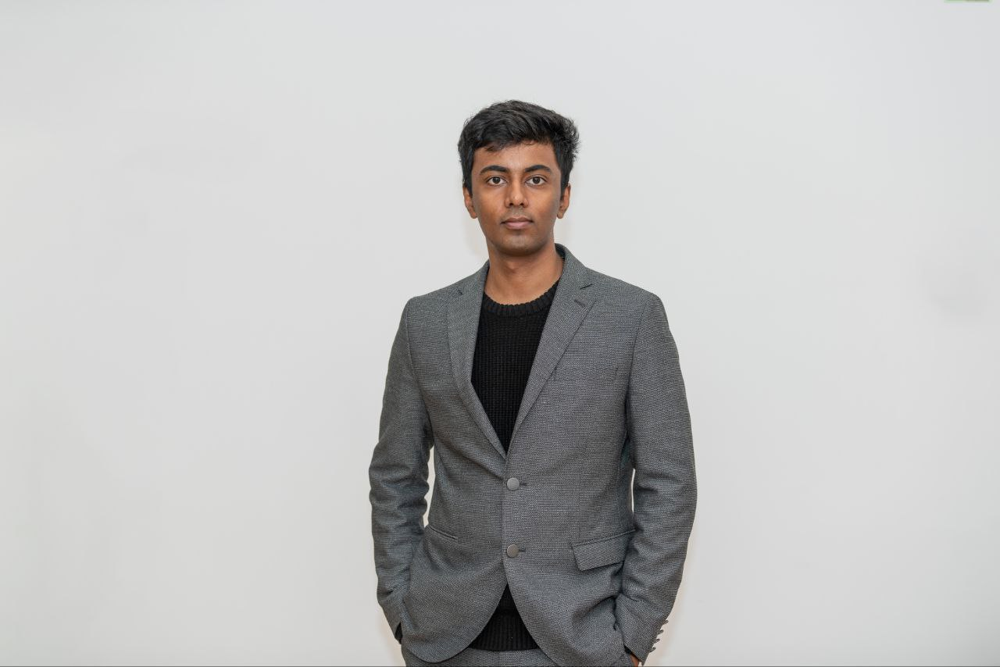

Security across agent trajectories
Using intermediate code states and recorded reasoning to review changes, validate repairs, and preserve security constraints as agents keep working.
PhD Researcher · University of Luxembourg
Understanding code.
Building better agents.
I study how LLM coding agents make decisions, how their code evolves, and how to use that history to make software more secure and reliable.

01 / Research
Functional correctness is one part of the story. My work examines the security, runtime behavior, and internal representations of generated code.
Using intermediate code states and recorded reasoning to review changes, validate repairs, and preserve security constraints as agents keep working.
Measuring structural consistency and runtime behavior across valid solutions, and designing evaluations that expose what pass rates miss.
Connecting static analysis with model representations to understand what code models encode and how their behavior can be changed.
FNR TREK/JUMP · 2026 award
Trace-based Runtime Analysis
for Code Evolution Review
I am the principal investigator of TRACER at the University of Luxembourg. The project studies how recorded development histories can inform the review of evolving code.
02 / Publications
13 works
03 / Background
PhD Researcher · SnT
Research on LLM coding agents, program analysis, and software reliability.
Co-Founder
Built LLM agent systems for biotech investment due diligence, combining retrieval with domain-specific information.
Research Scientist / Data Scientist
Language-model fine-tuning and knowledge-graph retrieval for complex question answering.
University of Luxembourg
Expected completion in February 2028.
Skolkovo Institute of Science and Technology
Grade: 4.8 / 5.
Indian Institute of Technology Kanpur
Also attended the Oxford Machine Learning Summer School (OxML 2024).
Let's talk research
I welcome conversations about coding agents, software security, and LLM evaluation.